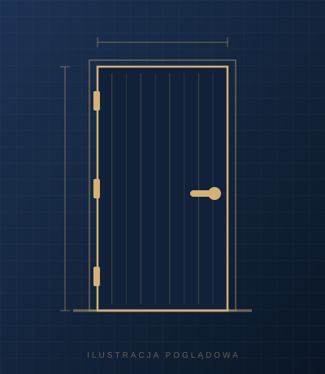

Strona główna › Wewnętrzne przeciwpożarowe › Drzwi przeciwpożarowe z blachy powlekanej, kolor drewnopodobny

Wewnętrzne przeciwpożarowe
Drzwi przeciwpożarowe z blachy powlekanej, kolor drewnopodobny
Cena: zapytaj telefonicznie
Drzwi przeciwpożarowe wykonane z blachy powlekanej, wykończone w kolorze drewnopodobnym, dla wnętrz, w których drzwi mają wyglądać jak zwykłe drzwi drewniane. Klasę odporności ogniowej podamy przy zamówieniu.
Parametry
| Wykończenie | blacha powlekana, kolor drewnopodobny |
|---|